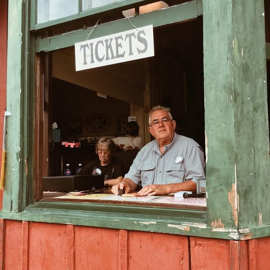

Dearest Ryan and Family, Your grandmother, Clara, was our neighbor when I grew up in Chase County. I knew all the Morelands and the McNairs. Your dad was several years older than I was but he worked for my dad, Dee Malcolm, during wheat harvest, I so remember his hair color and and style but I remember most, his personality. He was a Class act. May all your memories of this “Special” man give you and your family comfort and peace. I can only imagine the joy your Margot brought him. Vicky Smith, Lincoln, NE
Words of remembrance
Condolences
Messages shared by friends and community.
These messages remember Terry's warmth, character, and the many lives he touched.
Terry was a longtime ticket agent for the Midwest Central Railroad. He always greeted our passengers with a smile and truly enjoyed meeting the various people that attended Midwest Old Threshers throughout the years. He was always willing to help out whenever we were short. His smile and personality will be greatly missed by the volunteers at Midwest Central Railroad.
